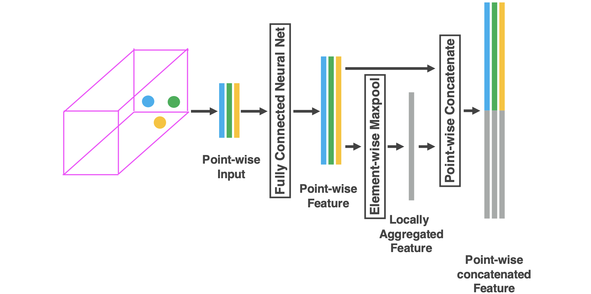
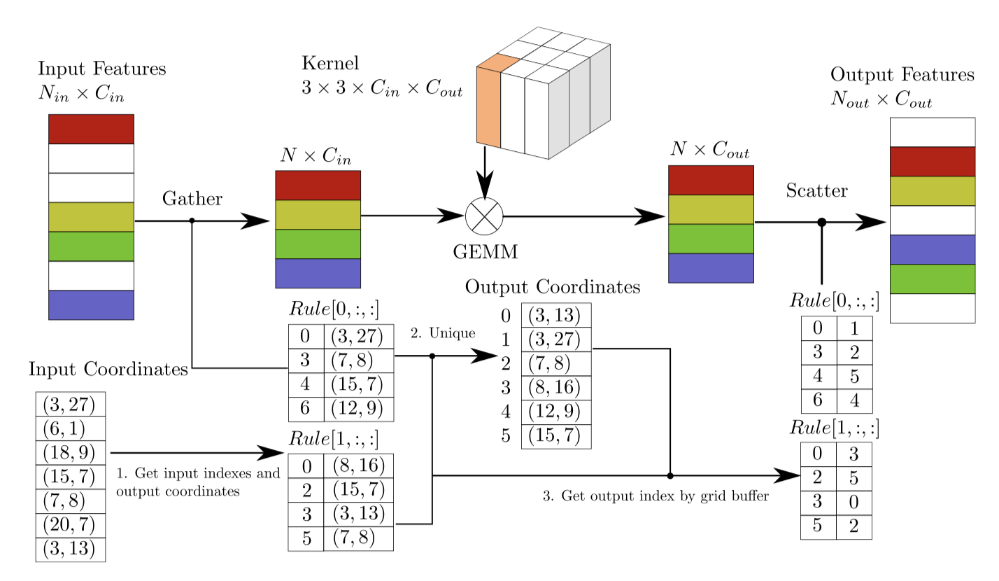

选择它的原因：在CT3D中作为RPN的backbone
1. Advantages
- 在点云目标检测上应用稀疏卷积，并对其改进，大大提高速度；
- 提出一种角度损失回归方法，具有更好的方向回归表现；
- 提出一种数据增强方法，提高了收敛速度和表现。
2. Pipeline
2.1 Overview
SECOND由三个部分构成：基于体素的特征提取器；稀疏卷积中间层；RPN网络。
SECOND以原始点云作为输入，将其转化为体素的特征和坐标，通过两个VFE（体素特征编码）层和一个线性层进行特征提取；接着通过稀疏CNN层；最后通过RPN生成检测。
2.2 Point Cloud Grouping
- 根据体素的数量限制来预分配缓冲区；
- 迭代点云，将点云中的点分配给他们相关的体素（通过Hash表判断是否应该新加体素，或者放到已有体素中），并记录体素的坐标以及体素内点云数量；
- 当体素数量达到阈值时，停止迭代。获得每个体素的坐标以及其中点云的数量。
- 根据需要提取的目标的维度特征信息，对点云进行裁剪。裁剪区域需要根据体素大小稍微调整，以确保生成的特征图的大小可以在后续网络中正确下采样。
2.3 Voxelwise Feature Extractor
体素特征提取器由多个VFE层和一个FCN层构成。
采用VFE（体素特征编码层）对体素内的点云进行特征提取。

图 3 VFE Layer Pipeline
VFE将某一体素内的所有点统一作为输入，使用由线性层、\(BatchNorm\)层和\(ReLU\)层组成的FCN（全连接）层来提取点云特征；接着使用元素最大池化来获得每个体素的局部聚合特征；最后将局部聚合特征平铺，并与点云特征相连接。
定义\( V=\{ p_i=[x_i,y_i,z_i,r_i]^T \in \mathbb{R}^4 \}_{i=1,...,t}\)为一个包含t个点云的非空体素，其中\( p_i\)包含了第\(i\)个点云的\(XYZ\)坐标和其反射强度\(r_i\)。对该体素\(V\)进行体素编码特征的具体流程如下：
- 计算局部均值\((v_x,v_y,v_z)\)作为\(V\)中所有点的质心；
- 通过将相对偏移量加入到\(p_i\)表示中以补充每个点云表示，并得到输入特征集\( V_{in}=\{ \hat{p_i}=[x_i,y_i,z_i,r_i,x_i-v_x,y_i-v_y,z_i-v_z]^T \in \mathbb{R}^7 \}_{i=1,...,t}\)；
- 将\(V\)中每个\(\hat{p_i}\)通过FCN网络，通过聚合来自点特征\(f_i \in R^m\)的信息来编码体素内物体表面的形状。
- 在得到点特征表示\(f_i\)后，对\(V\)中所有\(f_i\)采用元素最大池化来得到\(V\)的局部特征\(\tilde{f} \in \mathbb{R}^m\)；
- 将\(\tilde{f}\)补充到每个点云特征\(f_i\)中，形成逐点连接特征\(f^{out}_{i}=[f^T_i,\tilde{f}^T]^T \in \mathbb{R}^{2m}\)，并得到输出特征集合\( V_{out} = \{f^{out}_{i}\}_{i...t}\)。
由于输出特征结合了逐点特征和局部聚合特征，因此堆叠 VFE 层对体素内的点交互进行编码，并使最终特征表示能够学习描述性形状信息。需要注意的是，所有非空体素在编码过程中的FCN中的参数都是共享的。
2.4 Sparse Convolutional Middle Extractor
2.4.1 Sparse Convolution Algorithm
首先思考2D稠密卷积算法。用\(W_{u,v,l,m}\)表示过滤后的元素，\(D_{u,v,l}\)表示图像元素。其中\(u 和 v\)是空间位置索引，\(l\)表示输入通道，\(m\)表示输出通道。函数\(P(x,y)\)根据输出位置索引\(x和y\)生成输入空间索引\(u和v\)。卷积输出\(Y_{x,y,m}\)由以下公式给出：
\( \begin{align} Y_{x,y,m}=\sum_{u,v \in P_{(x,y)}} \sum_{l} W_{u-u_0,v-v_0,l,m} D_{u,v,l} \end{align}\)
其中\( u-u_0和v-v_0\)分别表示加上内核偏移量的\(u和v\)坐标。通过基于GEMM（通用矩阵乘法）的算法可以得到\(\tilde{D}_{P(x,y),l}\)所需的全部数据，接着使用GEMM得到\(Y_{x,y,m}\):
\( \begin{align} Y_{x,y,m}=\sum_{l} W_{*,l,m} \tilde{D}_{P(x,y),l} \end{align}\)
这里\(W_{*,l,m}\)是\(W_{u-u_0,v-v_0,l,m} \)的GEMM形式。对于稀疏数据\(D'_{i,l}\)和相关输出\( Y'_{j,m}\)，直接计算如下：
\( \begin{align} Y'_{j,m}=\sum_{i \in P'(j)}\sum_{l} W_{k,l,m} D'_{i,l} \end{align}\)
这里\(P'(j)\)是用于获取输入索引\(i\)和滤波器偏移量的函数。下标\(k\)代表\( u-u_0和v-v_0\)，下标\(i\)代表\(u和v\)。式3的GEMM形式如下：
\( \begin{align} Y'_{j,m}=\sum_{l} W_{*,l,m} \tilde{D}'_{P'(j),l} \end{align}\)
所收集的稀疏数据矩阵\(\tilde{D}'_{P'(j),l}\)仍然包含许多不需要计算的零。因此将式3重写如下：
\( \begin{align} Y'_{j,m}=\sum_{k}\sum_{l} W_{k,l,m} \tilde{D}'_{R_{k,j},k,l} \end{align}\)
这里\(R_{k,j}\)是一个Rule矩阵，指定给定内核偏移量\(k\)的输入索引\(i\)和输出索引\(j\)。由于式5中的内和无法用GEMM计算，因此我们需要gather数据以构造适合GEMM计算的矩阵，在计算后再将数据scatter。
在实践中，可以使用预先构造的输入输出索引Rule矩阵从原始稀疏数据中进行gather操作，从而加快速度。构建维度为\(K \times N_{in} \times 2\)的规则矩阵表\( R_{k,i,t}=R[k,i,t]\)，其中\(K\)是核大小，\(N_{in}\)是输入特征的数量，\(t\)是输入和输出的索引。\(R[:,:,0]\)储存了用于gather的输入索引，\(R[:,:,1]\)储存了用于scatter的输出索引。

图 3 Sparse Convolution Algorithm(above) and the GPU Rule Generation Algorithm(below)
2.4.2 Rule Generation Algorithm
规则生成的直接方法是迭代输入点以查找与每个输入点相关的输出并将相应的索引存储到规则中。 在迭代过程中，需要一个表来检查每个输出位置是否存在，以决定是否使用全局输出索引计数器来累积数据。